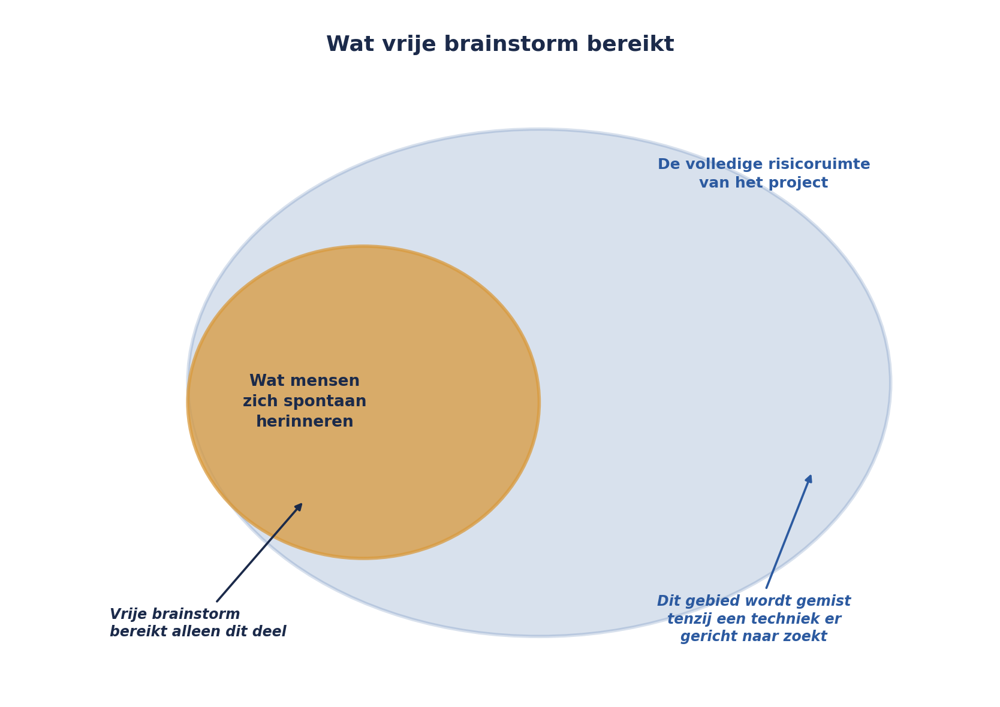

Cursus Risicomanagement · Niveau 1 (CRMF/ISO 31000) · Deel 4 van 30
Risico's systematisch boven tafel.
Sanne Bakhuis belegt haar eerste identificatiesessie voor de WGP 2.0-herstart en opent met "wie heeft er risico's?" — binnen vijf minuten staan er acht regels op het bord, zeven daarvan variaties op wat er al in het oude register stond. De sessie loopt vast op stilte. Dit deel behandelt waarom vrij brainstormen structureel faalt, vijf technieken die dat wél doorbreken, en hoe u ruwe input vertaalt naar de volwaardige risicozin uit deel 1.
6secties
±1,25uleestijd + werkboek
8controlevragen
5identificatietechnieken
Positionering. Deze cursus is een voorbereiding op het CRMF-examen (ISO 31000 Foundations) van GN-IC en uitdrukkelijk geen vervanging van het officiële examenmateriaal van die instantie. Controleer bij inschrijving altijd het actuele aanbod, de kosten en de examenvorm bij GN-IC of uw opleider zelf; informatie in dit materiaal is geverifieerd in augustus 2026 en kan wijzigen.
Niveau 1: ➊ Wat risico eigenlijk is → ➋ Standaarden: dezelfde taal, niet dezelfde vraag → ➌ Het proces, en de stap die iedereen overslaat → ➍ Identificatie: risico's systematisch boven tafel krijgen (hier) → ➎ Kwalitatieve analyse, en de matrix die je mag wantrouwen → ➏ Evaluatie en respons: wat doe je ermee? → ➐ Het register als levend instrument → ➑ Monitoring, rapportage en escalatie: de grens die er nooit was → ➒ Rollen en governance: wie draagt dit structureel? → ➓ Examentraining en capstone: de verdediging
01
De eerste sessie
⏱ 8 min
Sanne Bakhuis belegt de eerste identificatiesessie voor de WGP 2.0-herstart met haar context- en criteriadocument in de hand — het document uit deel 3, vastgesteld door de stuurgroep. Aanwezig: de nieuwe projectmanager, twee ontwikkelaars, een vertegenwoordiger van de business, en Gerard Ploeg.
Ze begint zoals de vorige keer:
"Wie heeft er risico's?"
Binnen vijf minuten heeft ze acht regels op het bord staan. Zeven daarvan zijn variaties op wat er al in het oude register stond. De sessie loopt vast op stilte.
Dat is niet omdat er geen risico's meer zijn. Het is omdat "wie heeft er risico's" de meest onproductieve identificatievraag is die bestaat — hij spreekt alleen aan wat mensen toevallig al paraat hebben, en dat is vrijwel altijd wat er al bekend was. Dit deel gaat over de technieken die wél iets nieuws boven tafel krijgen.
02
Waarom vrij brainstormen niet werkt
⏱ 10 min
Vrije brainstorm heeft twee structurele zwaktes. De eerste is dat hij leunt op wat aanwezigen zich toevallig herinneren — recente gebeurtenissen, de meest zichtbare zorgen, de mening van wie het hardst praat. De tweede is dat hij geen enkele garantie geeft dat een categorie van risico's compleet in beeld komt: als niemand aan juridisch risico denkt, komt juridisch risico niet op het bord, en niemand merkt het gemis.
Dat is precies wat er bij WGP 2.0 gebeurde met de drie risico's die de post-mortem later blootlegde (zie deel 1): scope-instabiliteit door wetgeving, sleutelkennis bij één persoon, leveranciersafhankelijkheid. Geen daarvan was onbekend — Gerard Ploeg wist zelf donders goed dat hij de enige was die de premieberekening doorgrondde. Ze werden alleen nooit gevraagd, omdat er geen techniek was die daar systematisch naar zocht.

Figuur 4-1 — Twee cirkels: wat mensen zich spontaan herinneren versus de volledige risicoruimte van het project. Vrije brainstorm bereikt alleen de overlap.
De oplossing is niet enthousiasme of meer tijd. De oplossing is structuur die je dwingt ergens te kijken waar je niet vanzelf zou kijken.
Controlevraag
Uit Werkboek deel 4, Zelftoets vraag 1
1Wat zijn de twee structurele zwaktes van vrije brainstorm als identificatietechniek?Toon antwoord
Hij leunt op wat mensen zich toevallig herinneren, en hij garandeert geen dekking van hele categorieën risico. Dat laatste is een structureel probleem, geen kwestie van meer tijd of enthousiasme.
03
Vijf technieken, en wanneer je welke gebruikt
⏱ 18 min
Categorie-gestuurde identificatie
Werk een vaste lijst risicocategorieën systematisch af — bijvoorbeeld financieel, juridisch/compliance, technisch/IT, organisatorisch/personeel, extern/leverancier, reputatie — en vraag bij elke categorie apart: welke risico's zien we hier? Dit is direct de toepassing van het idee uit het Orange Book (deel 2): een vaste indeling voorkomt dat een hele categorie structureel wordt overgeslagen.
Voor WGP 2.0-herstart zou de categorie "organisatorisch/personeel" de vraag hebben opgeroepen die nooit werd gesteld: is er kennis die bij één persoon zit?
Oorzaak-gebeurtenis-gevolgketens
Begin bij een doelstelling uit het context- en criteriadocument (bijvoorbeeld: opleverdatum 1 november) en vraag systematisch: wat zou ervoor kunnen zorgen dat we deze datum niet halen? Werk elk antwoord door tot een risicozin. Deze techniek levert van nature goed geformuleerde risico's op, omdat hij al bij de doelstelling begint in plaats van andersom.
Aannameanalyse
Loop het projectplan, de businesscase en de context door op woorden als "gaan ervan uit dat", "verwachten dat", "zal", "is stabiel". Elke aanname die u vindt, draait u om tot een risicozin (zie deel 1: elke aanname is een onbeheerd risico). Dit is de techniek die scope-instabiliteit door wetgeving had gevonden — die stond immers als aanname op pagina twee van het oorspronkelijke plan.
Vooraf-mislukt / pre-mortem
Vraag de groep zich voor te stellen dat het project over een jaar opnieuw is mislukt, en laat ze in die fictieve toekomst redeneren: wat is er gebeurd? Deze techniek werkt goed omdat hij het sociale ongemak van "risico's benoemen" omzeilt — je praat over een fictieve mislukking, niet over een beschuldiging aan het heden. Bij Meridiaan, met een organisatiecultuur die terughoudend is met het melden van tegenvallers (zie de interne context uit deel 3), is dit vaak de meest opbrengende techniek.
Leren van vergelijkbare projecten en de post-mortem zelf
De WGP 2.0-post-mortem is zelf een identificatiebron. Elke bevinding daaruit kan worden getoetst: is de onderliggende oorzaak voor de herstart weggenomen, of speelt hij nog steeds? Dit is geen creatieve techniek maar een controletechniek, en hij hoort standaard aan het eind van elke sessie thuis.
Figuur 4-2 — Vijf technieken naast elkaar, met per techniek het type risico dat hij het beste blootlegt.
Geen enkele techniek is compleet op zichzelf. De praktijk is een sessie die twee of drie technieken combineert, met bewuste tijdvakken per techniek — niet één ongestructureerd uur "brainstormen".
Controlevragen
Uit Werkboek deel 4, Opdracht 4.1 en 4.2 — welke techniek mist hier, en aannames vinden
1Een projectteam hield alleen vrije brainstorm en miste elk risico rond de externe accountant, die een cruciale rol speelt bij de oplevering. Welke techniek had dit waarschijnlijk boven tafel gekregen, en waarom specifiek die?Toon antwoord
Categorie-gestuurde identificatie, mits "extern/derde partijen" of "assurance/audit" als vaste categorie is opgenomen. Vrije brainstorm mist dit type risico structureel omdat niemand in de sessie de accountant "top of mind" heeft tijdens het projectwerk — die rol komt pas concreet in beeld rond de oplevering, ver weg van het moment van de sessie. Ook verdedigbaar: aannameanalyse, als het projectplan een passage bevat als "de accountant zal de gebruikelijke werkzaamheden uitvoeren".
2In een projectplan staat: "Testen vindt plaats in de bestaande testomgeving, die op dit moment door twee andere projecten wordt gebruikt maar waarvan capaciteit voldoende zal zijn." Wat is hier de aanname, en hoe luidt de omgedraaide risicozin?Toon antwoord
De aanname: "waarvan capaciteit voldoende zal zijn". Omgedraaid: doordat de testomgeving gedeeld wordt met twee andere lopende projecten en er geen capaciteitsafspraken zijn vastgelegd, kan gelijktijdig testgebruik tot planningsconflicten leiden, waardoor testrondes worden vertraagd en de geplande opleverdatum in gevaar komt. Aannames staan er vaak neutraal en geruststellend bij ("naar verwachting", "zal volstaan") — juist dat geruststellende toontje is het signaal om door te vragen.
04
De risicozin in de praktijk
⏱ 15 min
Een identificatiesessie levert ruwe input op, geen kant-en-klare risicozinnen. De vertaalslag is een apart, disciplinegebonden werkje, en het is waar de meeste kwaliteit verloren gaat als het wordt overgeslagen.
Neem een ruwe opmerking uit de pre-mortem-ronde: "Ik zie het al gebeuren dat de business straks niet meedoet met testen."
Stap 1 — de oorzaak vinden. Waaróm zou de business niet meedoen? Doorvragen levert op: er is geen capaciteit vrijgemaakt, en de vorige keer (WGP 2.0) is dat ook nooit expliciet geregeld.
Stap 2 — de gebeurtenis scherp krijgen. Wat gebeurt er precies als dit zich voordoet? Niet "de business doet niet mee" in het algemeen, maar: acceptatietests worden uitgevoerd door het projectteam zelf, zonder businessvalidatie.
Stap 3 — het gevolg koppelen aan de doelstelling. Welke doelstelling uit het context- en criteriadocument raakt dit? De kwaliteitsdoelstelling: risico op onopgemerkte fouten die pas na livegang aan het licht komen.
Resultaat
Doordat er voor de acceptatietestfase geen capaciteit van de business is vrijgemaakt en dit niet formeel is vastgelegd in de planning, kan de acceptatietest feitelijk door het projectteam zelf worden uitgevoerd zonder onafhankelijke businessvalidatie, waardoor fouten pas na livegang aan het licht komen in plaats van tijdens de testfase.
Vergelijk dit met de ruwe opmerking waarmee we begonnen. Dezelfde zorg, maar nu met een aanwijsbare oorzaak (geen capaciteit vastgelegd), een scherpe gebeurtenis (wie test er eigenlijk) en een gevolg dat aan een doelstelling hangt (kwaliteit bij livegang). Dit is de vertaalslag die bij elk ruw risico moet plaatsvinden, en die in een sessie apart tijd verdient — probeer dit niet live tijdens het verzamelen te doen, want dat vertraagt de sessie en remt de opbrengst.
Controlevragen
Uit Werkboek deel 4, Opdracht 4.4 — van ruwe input naar risicozin
1Ruwe input: "Wat als de nieuwe wetgeving toch wordt uitgesteld en we voor niets aan het bouwen zijn?" Werk dit uit tot een volledige risicozin.Toon antwoord
Doordat het wetsvoorstel nog niet definitief is aangenomen en de parlementaire behandeling kan uitlopen, kan de bouw van de koppeling starten op basis van een specificatie die nog wijzigt, waardoor reeds gebouwde onderdelen moeten worden aangepast of weggegooid. Veelgemaakte fout: de onzekerheid in de oorzaakpositie zetten ("doordat de wetgeving misschien wordt uitgesteld") in plaats van een vaststaand feit (er ligt een wetsvoorstel in behandeling).
2Ruwe input: "Niemand controleert eigenlijk of de testresultaten wel kloppen." Werk dit uit tot een volledige risicozin.Toon antwoord
Doordat er geen rol is aangewezen die testresultaten onafhankelijk controleert vóór acceptatie, kan een onjuist geïnterpreteerd testresultaat als geslaagd worden geboekt, waardoor fouten pas na livegang aan het licht komen. Controleer bij elk antwoord de vier zelfcontrolevragen uit deel 1: oorzaak vandaag vast te stellen, gebeurtenis echt onzeker, gevolg gekoppeld aan een meetbare doelstelling, oorzaak en gevolg vragen om verschillende maatregelen.
05
Rollen in een identificatiesessie
⏱ 10 min
Vier rollen, expliciet toegewezen, voorkomen dat de sessie afhankelijk wordt van wie toevallig het hardst praat:
Facilitator — bewaakt de techniek en de tijd, formuleert zelf geen risico's inhoudelijk
Schrijver — legt ruwe input vast, zonder meteen te herformuleren (dat komt later, zie sectie 4)
Domeinexperts — leveren de inhoud, per categorie of onderwerp aangevuld
Risico-eigenaar in spe — meestal pas ná de sessie toegewezen (zie deel 7), maar het is nuttig tijdens de sessie al te vragen "wie zou dit risico het beste kunnen beheersen?" als extra toets op de kwaliteit van de formulering
Een veelgemaakte fout is dat de projectmanager zowel facilitator als belangrijkste domeinexpert is. Dat werkt averechts: als facilitator moet je juist stiltes laten vallen en doorvragen, en dat is moeilijk te combineren met zelf de meeste inhoudelijke input leveren. Voor de WGP 2.0-herstart koos Sanne er daarom voor zelf te faciliteren en de projectmanager als domeinexpert te laten optreden — een omkering van de gebruikelijke rolverdeling, en een bewuste correctie op wat er de vorige keer misging.
Controlevragen
Uit Werkboek deel 4, Opdracht 4.5 — rollen toewijzen
1Een identificatiesessie telt zes deelnemers, onder wie een projectmanager die van nature veel praat en sterke meningen heeft. Waarom kiest u deze persoon niet als facilitator?Toon antwoord
Iemand die van nature veel praat en sterke meningen heeft, zal als facilitator onbewust sturen naar zijn eigen zorgen en minder ruimte laten voor stiltes waarin anderen tot een antwoord komen. Zijn expertise is waardevoller ingezet als domeinexpert, waar hij juist wél inhoudelijk mag domineren — mits de facilitator andere stemmen actief blijft uitnodigen.
2Wanneer wijst u in zo'n sessie de risico-eigenaar formeel toe: tijdens de sessie zelf, of erna?Toon antwoord
Formeel pas ná afloop (zie deel 7). Tijdens de sessie is het wel nuttig om per risico kort te benoemen "wie zou dit het beste kunnen beheersen?" — dat werkt als extra toets op de kwaliteit van de formulering, zonder dat het al een bindende toewijzing is.
06
Wat de sessie voor WGP 2.0-herstart opleverde
⏱ 10 min
Met de vijf technieken gecombineerd — vooral aannameanalyse en pre-mortem — kwamen er negentien risico's boven tafel, tegenover de zevenenveertig van het oude register. Dat is geen zwaktebod. Het oude register bevatte zevenentwintig categorieën-zonder-inhoud (zie deel 1) die helemaal niet meetelden als risico's. Negentien volwaardige risicozinnen, elk met een aanwijsbare oorzaak en een gekoppelde doelstelling, zijn bruikbaarder dan zevenenveertig regels waarvan het merendeel niets zegt.
Onder de negentien: de sleutelkennis bij Gerard Ploeg (nu boven tafel via aannameanalyse — "gaan ervan uit dat de huidige documentatie voldoende is"), de testcapaciteit van de business (via pre-mortem), en een nieuw risico dat bij WGP 2.0 helemaal niet bestond: de kennis over waarom het project de vorige keer mislukte, zit voor een deel bij mensen die inmiddels zijn vertrokken.
Samenvatting van dit deel
Vrije brainstorm levert alleen op wat mensen zich toevallig herinneren, en garandeert geen dekking van hele categorieën risico. Dit is een structureel probleem, geen kwestie van meer tijd of enthousiasme.
Vijf technieken, te combineren: categorie-gestuurde identificatie, oorzaak-gebeurtenis-gevolgketens vanuit doelstellingen, aannameanalyse, pre-mortem, en toetsing tegen een eerdere post-mortem.
Ruwe input uit een sessie is geen risicozin. De vertaalslag — oorzaak vinden, gebeurtenis scherp krijgen, gevolg aan een doelstelling koppelen — is apart werk en verdient aparte tijd.
Vier rollen (facilitator, schrijver, domeinexperts, risico-eigenaar in spe) voorkomen dat de sessie leunt op wie het hardst praat. Facilitator en belangrijkste domeinexpert zijn idealiter niet dezelfde persoon.
Minder, goed geformuleerde risico's zijn bruikbaarder dan veel slecht geformuleerde.
Controlevraag
Uit Werkboek deel 4, Zelftoets vraag 7
1Waarom leverde Sanne's sessie negentien risico's op, tegenover zevenenveertig in het oude register — en waarom is dat geen achteruitgang?Toon antwoord
Het oude register bevatte zevenentwintig categorieën-zonder-inhoud die niet als volwaardig risico meetelden; negentien goed geformuleerde risicozinnen zijn bruikbaarder dan zevenenveertig regels waarvan het merendeel niets zei.
Verder naar deel 5
Deel 5 neemt de negentien risico's van Sanne's sessie en behandelt hoe u ze kwalitatief analyseert: kans- en impactschalen in de praktijk toepassen, de risicomatrix — en waarom die matrix, hoe overal gebruikt ook, een aantal ingebouwde valkuilen heeft die u moet kennen om hem verantwoord te gebruiken.